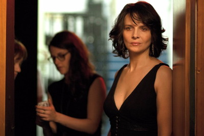

The 5 Best Movies of 2015
Here are Vanity Fair film critic Richard Lawson’s picks for the 5 best films of the year.
5. Ex Machina
Here’s a rare science-fiction film that references old classics, like Blade Runner, while inventing its own strange, haunting vernacular. Director Alex Garland’s mesmerizing, thoroughly frightening chamber piece about artificial intelligence has the smooth, polished hum of a meticulously made machine. But there’s something dark and chaotic lurking under its skin. The cast—Alicia Vikander, Oscar Isaac, Domhnall Gleeson, Sonoya Mizuno—performs with intensity and deep focus, Isaac and Vikander in particular, as a mad scientist and his wondrous creation, lending something both alienating and undeniably alluring to this slippery story of consciousness and deception. Credit also to Geoff Barrow and Ben Salisbury’s eerie score, each metallic fuzz and ping creating a mood of uncanny beauty and foreboding. Ex Machina is a chiller with whirring intelligence, and an uncommonly, almost scarily good directorial debut.
4. Carol
Todd Haynes’s sumptuously tailored period piece could easily have been just an affecting romantic melodrama, all pain of repression and unrequited longing. And there is plenty of that in this transfixing film. But Haynes and screenwriter Phyllis Nagy, adapting from Patricia Highsmith’s landmark lesbian novel The Price of Salt, also do a deeper, more intellectual investigation into the story of two women who fall in love in 1950s New York City. Carol is as much a picture about the vast, validating, unifying power of gay connection, the thrill and tingle and ache of seeing the same in another person, than it is about the specific romance between Rooney Mara’s quiet shopgirl and Cate Blanchett’s older, more experienced married woman. With Haynes and Nagy at the helm, Carol is a gay movie made by gay people, with all the particular intimacy that comes with that. The performances are superb, as are all the technicals, like Carter Burwell’s dreamy score, but there’s something beyond the tangible that really gives Carol its remarkable strength. It’s rare that a film so gracefully, fluently understands something deep and innate about the lives it’s depicting, and the lives it’s speaking to. Carol can be wintry and aloof, but it is always there, close by, whispering something like, “Me, too.”
3. Spotlight
Proof that a film can flourish without a bunch of fussy technical stuff, as long as the storytelling is smart and precise, Tom McCarthy’s Spotlight is probably the most lo-fi movie on this list. But it still tells an extraordinary story extraordinarily well, detailing The Boston Globe’s reporting on the Archdiocese of Boston’s massive sex-abuse cover-up in a way that’s exciting, informative, infuriating, and galvanizing. An ace cast works in pure harmony—this is the only ensemble better than The Martian’s this year—assembling a collage of Boston life with smarts and understatement. (In a year with some bad, Black Mass–y accents, that Spotlight goes light on all the “cahhh” and “Bahhhstin” stuff is a blessed relief to this Boston native.) An ode to thorough investigative journalism and a humble appreciation of some dedicated real-life practitioners of it, Spotlight gives an energizing jolt to anyone who thinks that systems of power and corruption are too complex and impenetrable to unknot and expose, and that today’s press is too weak to do it. This is, in its way, a piece of advocacy filmmaking, one that hits its points confidently and squarely on the head. It’s a mature, thoughtful triumph.
2. Clouds of Sils Maria
I first laid eyes on Clouds of Sils Maria way back in the middle of 2014, and I’ve been drawn back to it over and over again since. A lush, luxe production, staged mainly in the dizzying Swiss Alps, Sils Maria could, through one lens, be seen as a deliciously indulgent piece of Euro trifle. Starring Juliette Binoche as a movie star returning to the play that first got her noticed decades ago, and Kristen Stewart as her frank assistant, Olivier Assayas’s film has the juicy pull of a knowing showbiz satire, about vanity and insecurity and all that great actress-y stuff. And in that vein, Sils Maria delivers. But this verbose, rambling film is possessed of a stranger, more soulful spirit than it initially appears, gradually revealing itself to be a rather profound rumination on art and mortality. It’s also a curious meditation on sexual dynamics, and one hell of a tourism ad for the Alps, which loom with solid, staggering beauty while the film’s small and petty humans try to grapple with the vastness. Binoche and Stewart are terrific in this truly bewitching piece of luxury art-house cinema.
1. Mad Max: Fury Road
Quite simply the most thrilling action movie of the decade, George Miller’s return to the sun-blasted deserts of his Mad Max universe makes quite a case for waiting 30 years between films in a franchise, and for upending audience expectations while still satisfying primal needs. All you want is here: roaring car chases, belching fire, massive explosions, ludicrous acrobatics, crunching fights. Fury Road is perpetually moving, but never gets repetitive or monotonous. Miller has stocked his movie with so many ingenious practical effects that what could be a fairly simple chase movie becomes something uniquely breathtaking. What we didn’t think to expect was the film’s surprisingly feminist take on dystopia, with Charlize Theron’s Imperator Furiosa leading a women’s-liberation movement that mostly takes center stage, leaving stolid Max (Tom Hardy, doing his thing) to help out when he can. Grim, loud, and eye-popping, Fury Road is far and away the most memorable movie experience of 2015, an action movie with soul, a post-apocalyptic chiller with hope, a blockbuster with boundless style. What a trip.